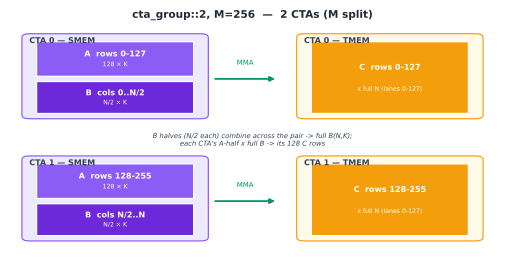
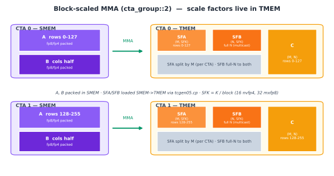

Tensor Core：tcgen05¶
概述
tcgen05是 Blackwell 的 Tensor Core 指令族。其 MMA 指令以协作方式执行分块矩阵乘加工作，并由一个被选中的线程提交该指令。- 累加器位于 TMEM 而非寄存器中。收尾阶段（epilogue）随后通过
tcgen05.ld将其取回寄存器。 cta_group::1和cta_group::2控制是一个 CTA 还是两个 CTA 协作参与 MMA。该选择也改变了 M 维度映射到 TMEM 的方式。- 块缩放 MMA 模式，如
mxfp8和nvfp4，增加了缩放因子操作数。数据操作数驻留在 SMEM 中，而缩放因子通过 TMEM 暂存。
稠密线性代数是现代 GPU 花费大部分有用工作的地方。普通的 CUDA 核矩阵乘法无法接近芯片标称的峰值（chap_background）。快速的 GEMM（通用矩阵乘法）和注意力核函数（kernel）通过以正确的分块形状、布局和同步喂给 Tensor Core 来达到该峰值。
基本操作自 Volta 以来在精神上并未改变。Tensor Core 消费矩阵分块，将其相乘并累加结果。各代之间变化的是操作如何发出、操作数如何布局以及累加器驻留在何处。
Blackwell 对最后一项做出了重大改变。tcgen05 的累加器不再作为长期存活的寄存器片段保存。它被写入张量内存（Tensor Memory，简称 TMEM，chap_tmem）。这一改变影响了整个核函数。MMA 写入 TMEM。完成被异步追踪。收尾阶段随后将累加器从 TMEM 加载出来，并将其转换回它所需的寄存器片段以进行转换和存储。
本章聚焦于计算指令本身。TMA（张量内存加速器，chap_tma）负责将操作数搬入 SMEM。TMEM 负责持有累加器和一些缩放因子操作数。tcgen05.mma 是位于这两次内存移动之间的 Tensor Core 操作。
交互演示：tcgen05 累加器行为。切换 A 或 B 的转置，选择输出宽度 N，并逐步执行 K 迭代以观察部分和在 TMEM 中累加。
tcgen05 MMA¶
tcgen05 MMA 是 Blackwell 的 Tensor Core 矩阵乘加指令。它是一条协作指令。工作为一个线程束组（warpgroup）执行，在某些模式下它可以涉及同一集群（cluster）中的两个 CTA。该指令并非由每个线程独立发出。一个被选中的线程代表参与的组提交操作。
将 MMA 拆分为三个问题来理解会有帮助。
第一个问题是谁在协作。普通模式使用一个 CTA，写作 cta_group::1。更大的模式使用集群中的两个 CTA，写作 cta_group::2。在两种情况下，该指令都表示对一个分块的一次 Tensor Core 操作，而非一个线程的标量操作。
第二个问题是操作数和结果位于何处。数据操作数通常驻留在 SMEM 中。某些变体也可以从 TMEM 读取 A 操作数。累加器写入 TMEM。操作数布局必须与 Tensor Core 所期望的匹配，包括数据操作数所使用的交换共享内存布局（chap_data_layout）。
第三个问题是如何观测完成。tcgen05.mma 是异步的。发出 MMA 并不意味着乘加已经完成。该指令在操作被提交后返回，而 Tensor Core 继续运行。核函数使用提交组和 mbarrier 来获知结果何时就绪（chap_async_barriers）。
正是这种异步行为使重叠成为可能。一个快速的核函数不会发出 MMA 后立即停滞直到它完成。它可以发出 MMA，开始准备后续分块，并仅在真正需要结果时才等待。代价是每次交接都必须是显式的。如果收尾阶段在 MMA 完成屏障触发之前读取 TMEM，它就读取得太早了。
累加器驻留在 TMEM¶
在 Ampere 和 Hopper 上，累加器以寄存器形式暴露给程序。MMA 产生一个每通道（lane）的寄存器片段，收尾阶段直接消费该片段。这很简单，但它将累加器大小与每个线程的寄存器预算绑定在一起。
Blackwell 打破了这一联系。tcgen05.mma 将其累加器写入 TMEM，这是一个作用域为 CTA 的 Blackwell 内存空间。累加器可以在计算阶段一直留在 TMEM 中，收尾阶段随后使用 tcgen05.ld 将其加载回寄存器。
这改变了核函数的形态。寄存器片段在边界处仍然重要。收尾阶段仍然需要寄存器以便转换、应用逐元素工作并存储结果。但长期存活的累加器状态不再是一个寄存器分配问题，而是一个 TMEM 分配和布局问题（chap_tmem）。
这就是为什么 tcgen05 和 TMEM 必须被放在一起理解。MMA 指令决定计算什么分块。TMEM 决定累加器落在何处。收尾阶段必须使用匹配的加载路径，以它期望的寄存器布局恢复累加器。
cta_group::1 和 cta_group::2¶
tcgen05 MMA 可以在 cta_group::1 或 cta_group::2 模式下运行。
在 cta_group::1 中，一个 CTA 拥有该 MMA。其操作数在该 CTA 的 SMEM 中，其累加器写入该 CTA 的 TMEM。
在 cta_group::2 中，集群中的两个 CTA 在一个 MMA 分块上协作。每个 CTA 有自己的 SMEM 和自己的 TMEM。累加器并不存储在一个跨越两个 CTA 的物理 TMEM 区域中。它被拆分到两个 CTA 上，每个 CTA 持有自己的部分。偶数 CTA 发出指令并为该对提交完成屏障。
这一选择很重要，因为它改变了逻辑累加器分块 C(M, N) 映射到 TMEM 的方式。TMEM 有 128 个硬件 Lane 行和最多 512 个硬件 Col 列。在 TIRx 布局记法中，这些轴写作 TLane 和 TCol。MMA 模式决定 C 的行和列如何放置到这些 TMEM 轴上。
有四种有用的情况需要记住。
下图遵循演示的颜色约定：紫色标记 SMEM 操作数，橙色标记 TMEM 累加器状态，绿色标记 Tensor Core MMA 路径。CTA 身份通过标签和位置表示，而非改变这些硬件颜色。
cta_group::1，M = 128¶
这是最简单的情况。一个 CTA 计算一个 128 行的分块。TMEM 也有 128 个 Lane 行。因此映射是直接的：累加器的行 m 映射到 Lane m，N 维度映射到 TMEM 列。
结果填充 128 个 Lane 行乘 N 个 Col 列。这是基线图景。CTA 在 SMEM 中拥有 A 和 B，并在其 TMEM 中拥有完整的累加器分块。

cta_group::1，M = 64¶
当 M = 64 时，累加器只有 64 行，但 TMEM 仍有 128 个 Lane 行。硬件并不会简单地将第 0 到 63 行装入第 0 到 63 通道。相反，它将它们以四段每段 16 行的方式分散到 128 个通道上。
第 0 到 15 行进入第 0 到 15 通道。第 16 到 31 行进入第 32 到 47 通道。第 32 到 47 行进入第 64 到 79 通道。第 48 到 63 行进入第 96 到 111 通道。
这在第 16 到 31、48 到 63、80 到 95 和 112 到 127 通道处留下了空隙。这些空隙是有意为之的。以不同的通道对齐，另一个独立的 M = 64 MMA 可以占据互补的通道。这使得两个较小的 M 分块可以共享 128 通道的 TMEM 结构而不互相干扰。
N 维度仍然映射到 TMEM 列。不寻常的部分仅仅是 M 行在 Lane 上的放置。

cta_group::2，M = 256¶
当 M 维度大于一个 CTA 能自然持有的规模时，MMA 可以使用 cta_group::2。对于 M = 256，拆分是直接的。CTA 0 持有第 0 到 127 行。CTA 1 持有第 128 到 255 行。
每个 CTA 使用自己的 TMEM Lane 行 0 到 127 和完整的 N 列。物理上，这是两个独立的 128 行 TMEM 区域，每个 CTA 各一个。逻辑上，它们构成一个 256 乘 N 的累加器分块。
每个 CTA 还提供与其 M 行对应的 A 部分。B 根据模式要求对两个 CTA 均可用。偶数 CTA 负责为该对发出 MMA 并提交完成屏障。
这是 chap_gemm_advanced 中双 CTA 集群 GEMM 所使用的模式。

cta_group::2，M = 128¶
cta_group::2、M = 128 模式仍然使用两个 CTA，但 M 维度更短。由于总共只有 128 行，每个 CTA 接收 64 个 M 行。
剩余的通道容量用于打包 N 维度。在每个 CTA 内部，N 的一半占据第 0 到 63 通道，N 的另一半占据第 64 到 127 通道。这使得每个 CTA 即便只拥有 64 行 M，也能用满全部 128 个 Lane 行。
因此拆分有两个部分。M 跨 CTA 对拆分，每个 CTA 64 行。N 随后在每个 CTA 内部跨 TMEM Lane 行的下半部和上半部拆分。

在这些模式中，原理是相同的。tcgen05.mma 计算一个逻辑累加器分块，但该分块必须被放置到物理的 128 Lane 乘最多 512 Col 的 TMEM 空间中。模式和 M 形状决定了该放置。核函数的其余部分在后续读回累加器时必须使用相同的映射。
对于这里的核函数，累加器在 TMEM 中通常是 f32。这是常见的高精度路径。它并非唯一可能的累加器类型。.kind::f16 路径可以在 f16 中累加。
操作数放置¶
对于稠密 MMA 模式，A 和 B 在 MMA 运行前于 SMEM 中准备好。TMA 负责将全局内存分块搬入 SMEM。核函数以 Tensor Core 所期望的布局安排这些 SMEM 分块，包括任何所需的交换。
累加器 C 写入 TMEM。这是与早期世代的主要区别。收尾阶段并不直接作为 MMA 指令的输出接收累加器。它必须用 tcgen05.ld 显式地从 TMEM 加载。
在 cta_group::1 中，一个 CTA 提供操作数并拥有累加器。在 cta_group::2 中，每个 CTA 从自己的 SMEM 提供自己一侧的操作数，每个 CTA 拥有自己那份累加器的 TMEM 部分。当 A 按 M 拆分时，每个 CTA 保留自己 M 切片的 A 行。B 根据模式共享，因为两个 M 切片都乘以相同的 N 乘 K 分块。
这种分离在读核函数时很重要。SMEM 放置回答了 Tensor Core 如何读取 A 和 B。TMEM 放置回答了累加器去向何处。这两种布局通过 MMA 模式相关联，但它们并非同一内存空间，不能视为可互换。
块缩放 MMA¶
稠密模式直接从 SMEM 读取其数据操作数并累加进 TMEM。块缩放 MMA 增加了两个操作数：A 和 B 的缩放因子张量。
这用于非常低精度的格式，如 mxfp8 和 nvfp4。低精度格式很高效，但它们的动态范围很小。单一的全局缩放通常过于粗糙。如果缩放为最大值选取，较小值会丢失精度。如果缩放为小值选取，较大值可能会被截断。
块缩放通过将缩放因子分配给小的 K 块来修复这一点。一组连续的 K 元素共享一个缩放。MMA 概念上用其缩放对每个块进行反量化，然后在累加器类型中累加乘积。
对于 A 和 B，这引入了两个缩放因子张量：
其中 SFK = K / B，B 是沿 K 的块大小。
确切的块大小取决于格式。要点在于缩放轴以更粗的粒度跟随 K。每个缩放因子描述一个 K 值的块，而非单个元素，也非整个矩阵。
数学形状为：
其中 Aq 和 Bq 是量化的低精度值，缩放在累加前恢复它们的近似量级。
缩放 dtype 也很重要。使用 e8m0 缩放时，每个缩放实际上是 2 的幂。使用 e4m3 缩放时（如 nvfp4 所用），缩放是一个小的浮点值，可以表示 2 的幂之间的值。
缩放因子位于何处¶
块缩放 tcgen05.mma 与稠密 MMA 在一个重要放置规则上不同：缩放因子从 TMEM 读取。
数据操作数 A 和 B 仍然暂存在 SMEM 中。缩放因子 SFA 和 SFB 通过 TMEM 暂存。由于 TMA 加载到 SMEM，缩放因子通常需要额外一步。核函数先将它们加载到 SMEM，然后用 tcgen05.cp 将它们从 SMEM 拷贝到 TMEM。只有当缩放因子进入 TMEM 后，块缩放 MMA 才能读取它们。
这使得缩放因子的移动路径与数据操作数不同：
A, B: global memory to SMEM, then MMA reads SMEM
SFA, SFB: global memory to SMEM, then tcgen05.cp copies SMEM to TMEM, then MMA reads TMEM
缩放因子的 TMEM 布局很紧凑。一个 128 行的缩放向量可以装入 32 个 Lane 行，使用基于 r % 32 的通道位置和沿列的 r / 32 的映射。随后数据可以广播到读取完整 128 Lane 空间的四个线程束（chap_layout_generations）。
这是一个很好的例子，说明为什么 TMEM 布局必须显式。累加器布局和缩放因子布局都在 TMEM 中，但它们不是同一种布局。累加器使用 MMA 输出映射。缩放因子使用块缩放 MMA 所期望的紧凑布局。
cta_group::2 中的缩放因子¶
在双 CTA 情况下，缩放因子跟随它们所缩放的数据。
SFA 缩放 A。由于 A 按 M 跨 CTA 对拆分，SFA 也按 M 拆分。每个 CTA 持有与其自己 A 行对应的 SFA 行。
SFB 缩放 B。由于两个 CTA 都乘以相同的 B 分块，SFB 必须对两个 CTA 均可见。实践中，这意味着 SFB 在 CTA 对之间多播。
这就是块缩放集群 GEMM 中常见加载模式的来源。SFA 按 CTA 加载，使用该 CTA 自己 M 切片的掩码。SFB 广播到该对，因为两个 CTA 需要相同的 N 侧缩放因子。

保持 MMA 契约匹配¶
一个 Blackwell GEMM 分块流经若干专门路径。
TMA 将 A 和 B 从全局内存带入 SMEM。对于块缩放模式，它还将缩放因子带入 SMEM。tcgen05.cp 在需要时将那些缩放因子搬入 TMEM。tcgen05.mma 读取其操作数，在 Tensor Core 上异步运行，并累加进 TMEM。完成屏障告诉核函数该累加器何时就绪。收尾阶段随后使用 tcgen05.ld 将累加器从 TMEM 加载回寄存器并存储最终输出。
在这些路径中，核函数必须保持三个契约匹配：SMEM 操作数布局、TMEM 累加器或缩放因子布局，以及使下一个消费者安全运行的异步完成信号。